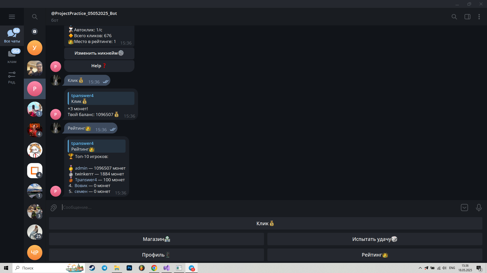
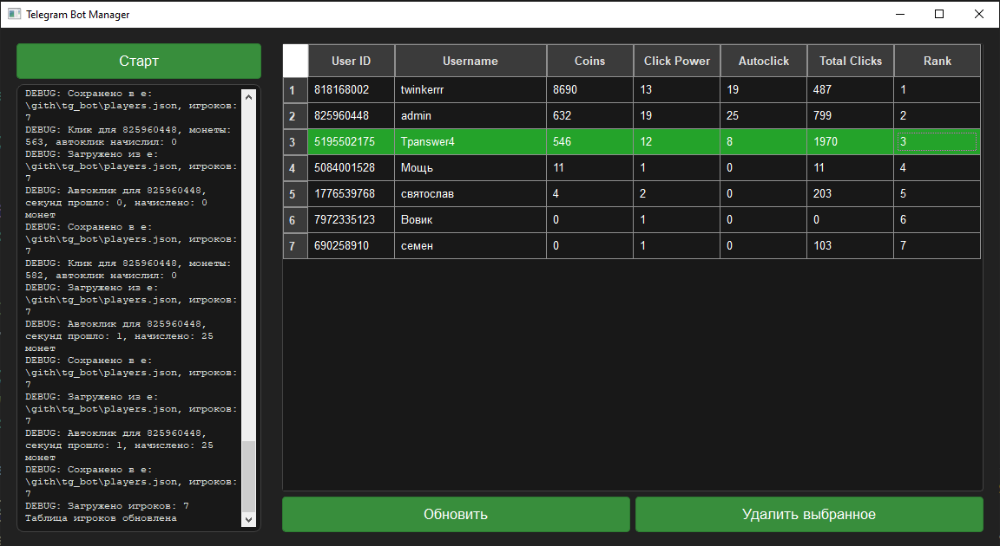

Технология вариативной части проектной практики - Telegram Bot Clicker на Python
Описание:
Clicker Bot - это интерактивная мини-игра в Telegram. Пользователи зарабатывают монеты через клики, покупают улучшения, играют в азартную игру и соревнуются в рейтинге. Bot Manager позволяет администратору управлять данными, логами и работой бота.
Ссылка на гитхаб:
Функционал Telegram-бота:
-
Старт игры: Команда /start регистрирует игрока, запрашивает никнейм (до 20 символов). Меню с кнопками: "Клик💰", "Магазин🏪", "Испытать удачу🎲", "Профиль📱", "Рейтинг👑".
-
Клики: Кнопка "Клик💰" или /click начисляет монеты по силе клика, обновляет баланс и статистику.
-
Автоклик: Покупка автоклика в магазине дает пассивные монеты (в секунду), обновляется при действиях игрока.
-
Магазин: Кнопка "Магазин🏪" или /shop открывает меню: улучшение клика (+1, цена: 50 * click_power²) и автоклик (+1 монета/с, цена: 100 * (autoclick + 1)²).
-
Игра на удачу: Кнопка "Испытать удачу🎲" или /luck запускает азартную игру, отмена через /cancel.
-
Профиль: Кнопка "Профиль📱" или /profile показывает никнейм, монеты, силу клика, автоклик, клики и место в рейтинге.
-
Рейтинг: Кнопка "Рейтинг👑" или /top показывает топ-10 игроков по монетам с ссылками на профили.
-
Справка: Команды /help и /menu показывают команды и возвращают основное меню.
-
Ошибки: Некорректные команды или данные вызывают подсказку /help или запрос ввода через ForceReply.
-
Данные: Данные игроков хранятся в JSON-файле, обновляются при действиях, с обработкой ошибок.
Рекомендации по установке:
Для установки Telegram Clicker Bot на вашем устройстве выполните следующие шаги:
- Убедитесь, что у вас стоит Windows (64bit).
- Нажмите на кнопку "Скачать".
- Распакуйте архив bot.zip в любую папку на компьютере.
- Создайте токен бота (файл .env) в папке с ботом.
- В созданном файле .env напишите токен бота (например: TELEGRAM_BOT_TOKEN=1234781234:AAEbm8MvcdEWfwfcqEneGddgt5XchoTR4).
- Сохраните файл .env
- Запустите bot_manager.exe от имени администратора.
- Чтобы запустить бота, нажмите кнопку "Старт".
Приятного использования! Желаем удачи!
Скриншоты разработанной технологии:

